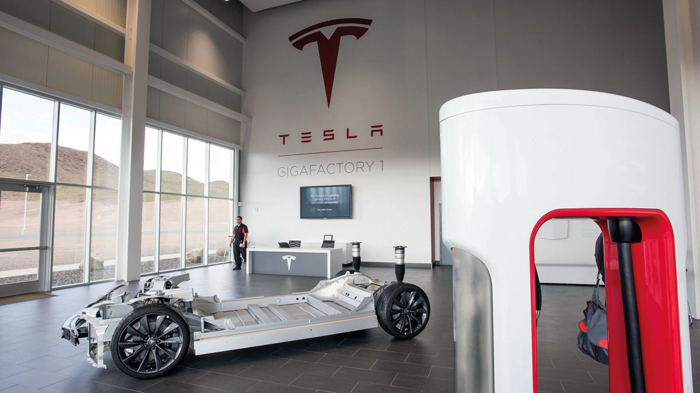
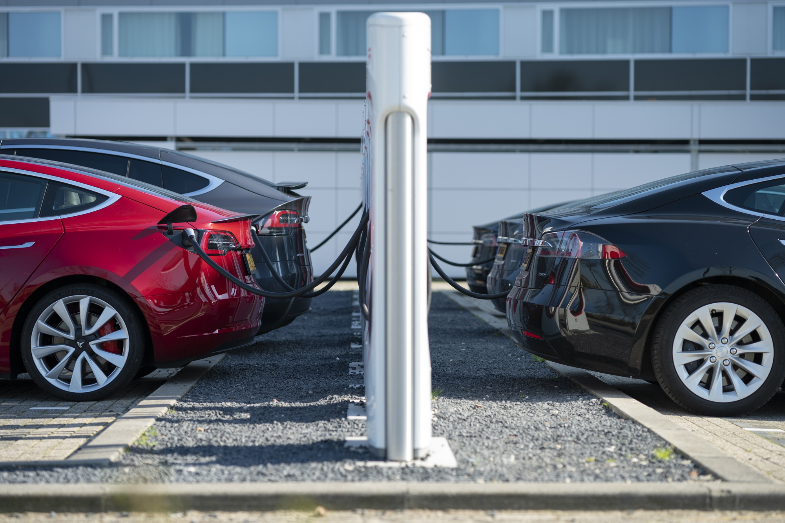

<section class="sustainability" style="background-color: #f0f0f0; padding: 50px 0;">
  <div class="container">
      <h2 class="text-center" style="margin-top: 50px;">Sustainability</h2>
      <div class="sustainability-details">
          <div class="sustainability-item card">
              
              <div class="card-body">
                  <h3 style="color: blue;">Renewable Energy</h3>
                  <p style="color: rgb(119, 119, 216);">
                      Additionally, Tesla develops software to support its energy products. In 2023, the company deployed solar energy systems capable of generating 223 megawatts (MW), a decrease of 36% over 2022, and deployed 14.7 gigawatt-hours (GWh) of battery energy storage products, an increase of 125% over 2022.
                  </p>
              </div>
          </div>
          <div class="sustainability-item card">
              
              <div class="card-body">
                  <h3 style="color: blue;">Carbon Emissions</h3>
                  <p style="color: rgb(119, 119, 216);">
                      Tesla's Scope 1 total carbon emissions reached 202,000 metric tons of carbon dioxide equivalent (mtCO₂e) in 2022. The amount was 185,000 mtCO₂e in 2021. The highest increase occurred in manufacturing, from 124,000 to 148,000 metric tons from 2021 to 2022.
                  </p>
              </div>
          </div>
      </div>
  </div>
</section>
